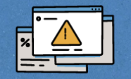
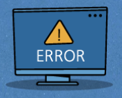

Последствия действий злоумышленников
Большинство атак направлено на конкретных пользователей, через которых злоумышленники получают доступ к конфиденциальным данным организации.
В результате информационных атак может быть нарушена работа сервиса или целой компьюьерной сети и похищены различные данные Вашей личной информации.
Это приводит к самым разным последствиям, от незначительных, например, публикация забавной фотографии с Вами или надоедливый рекламный спам, до самых серьезных: потери денежных единиц, прекращение деятельности организации и даже техногенных катастроф.
Для защиты передачи данных используется множество методов, в том числе и шифрование.
Признаки заражения персонального компьютера (ПК)
Медленная работа компьютера
Вы стали замечать, что:
- Программы начали "тормозить"
- Компьютер стал дольше работать
- При выходе в Интернет замедляется работа операционной системы
Что нужно делать:
- Обратиться в отдел информационной безопасности
- Провести полную проверку системы с помощью антивируса

Появление всплывающих окон
Что нужно делать:
- Отсоединить кабель, подключающий компьютер к локальной сети
- Обратиться в отдел информационной безопасности
- Провести полную проверку системы с помощью антивируса
- Не нажимать на всплывающие окна, пока не дождетесь результатов проверки
Самостоятельный запуск приложений
Что нужно делать:
- Отсоединить кабель, подключающий компьютер к локальной сети
- Обратиться в отдел информационной безопасности
- Провести полную проверку системы с помощью антивируса
- Проверить, какие именно программы расходуют трафик

Рассылка сообщений от вашего имени
Что нужно делать:
- Отсоединить кабель, подключающий компьютер к локальной сети
- При взломе рабочей почты обратиться в отдел информационной безопасности
- Провести полную проверку системы с помощью антивируса
- При взломе личной почты или социальной сети обратиться в службу поддержки используемого сервиса с сообщением о взломе
Операционная система не загружается
Компьютер включается, но экран монитора остается черным или синим, с надписями об ошибках системы
Что нужно делать:
- Обратиться к специалистам, чтобы восстановить систему и сохранить данные
- Обратиться в отдел информационной безопасности